You can study English while having fun with English puzzle graphs. You will learn about word interactions while solving puzzles. The puzzles will help you understand how word connections can guide the building of sentences.
Goals of working through the puzzles are:
Each puzzle takes the form of a graph of words with labelled arrows that connect the graph nodes. The labelled arrows are clues for building either a single complete sentence of English or several complete sentences of English. To solve a puzzle, you have to turn the graph of words with clues into sentences, called ‘solution sentences’. You can check your success by seeing if your solution sentence(s) match the suggested answer solution sentence(s).
In a puzzle graph, word content for solution sentences is found outside of square brackets (‘[’, ‘]’) and is always accompanied by (i) content between curly braces (‘{’, ‘}’) to say the word class of the word, and (ii) numbering inside round brackets (‘(’, ‘)’) to say the word position within the solution sentence(s).
There is at least one number inside round brackets per word, but there may be a second number separated by an underscore character (‘_’). The second number (if present) says which solution sentence the word belongs to. The first number says the position of the word within its solution sentence. If there is no second number, then only one solution sentence is expected.
Square bracket content tells us about how words function, that is, what words do in their sentences. These are important clues that help to say where words should go to form solution sentences.
Word content and/or square bracket content can provide the content for a graph node.
Word content and/or square bracket content can also provide the label for a directed arrow that connects graph nodes. An arrow connects content from one node (the master node) to another node (the dependent node). It is typically square bracket content that is used to label a directed arrow.
Square bracket content should not be included in your completed solution sentence(s). In contrast, all word content should be included in your completed solution sentence(s). You will never need to modify the forms of words, so a word should be entered into its solution sentences as you find it. That is, puzzles concern only deciding on the placement into solution sentences of the words you find in the graphs.
Most of the words you need for the solution sentence(s) of a puzzle are found inside its graph, but sometimes you will need to add additional ‘special’ words. Some of the special words will turn out to be words of English that are used to make reference to what is talked about. These words can be either:
Note that unbound pronouns do have graph presence.
Other special words are:
It is also possible for word content to involve the ‘#’ symbol. This marks a word absence that has a(n abstract) location in its solution sentence, as illustrated below in section 3.2.
This section offers tips for reaching solution sentences. This starts with a simple puzzle. Then, gradually, we pick up skills to tackle more complex puzzles.
To form a solution sentence you can start by looking into a puzzle graph for an arrow that includes [arg0] in its label. The master node for such an arrow will be the main verb of a clause, possibly with other supporting words, while the dependent node will be the head word corresponding to the subject, that is, the ‘do-er’ or ‘be-er’ or ‘have-er’ of the main verb.
Consider figure 1. This gives the puzzle graph for a single clause. By finding the arrow labelled [arg0], we can identify were(6) as the main verb with supporting there(5). We can also identify Rabbits(9) as the ‘be-er’ (subject) of the main verb.
Figure 1: Puzzle graph for a single clause
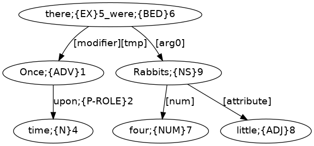When the main verb of a clause is were with supporting there, the [arg0] dependent will typically need to come after the instance of were. With this knowledge, we can construct (1).
With (1), we already have a full sentence of English! However, (1) is not a complete solution sentence for figure 1, since there are words that have yet to be used. Two of these words come at the ends of arrows that have Rabbits(9) as their master node. These words act to modify Rabbits(9). Specifically, there is a numeral modifier to tell us about the number of rabbits (four(7)), and there is an attributive modifier to tell us about the size of the rabbits (little(8)). In English, a numeral modifier should preceed an attributive adjective modifier to give (2).
Figure 1 also contains content for a temporal modifier with an arrow labelled [modifier][tmp] that has the main verb as its master node and that points to the adverb Once(1). This adverb has itself a modifier labelled with the preposition word upon(2) and with time(4) as the dependent word. After connecting these words, we end up with the solution sentence of (3).
Note that (3) includes a as the third word, and yet this word is not part of figure 1. This is an example of a ‘special’ word that, as already noted in section 2, we might sometimes need to add in addition to the words from the puzzle graph. We can gain confirmation that this extra word insertion is needed from observing that the resulting solution sentence now has words with positions that follow the word numbering of figure 1, as (4) makes explicit.
As another example, consider figure 2, which also has content for a single clause sentence.
Figure 2: Puzzle graph for another single clause
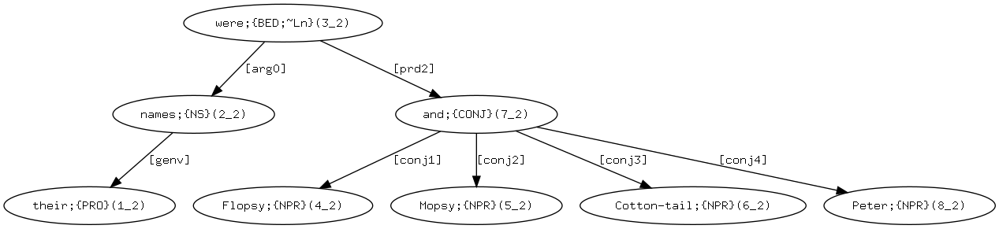Searching for an [arg0] labelled arrow, we find that were is once again the main verb of the clause, now as were(3) and without there. With no there, a clause with were as the main verb will typically need the ‘be-er’ (subject) to occur before were. The ‘be-er’ is names(2), which itself has an arrow labelled [genv] (genitive), which takes us to the genitive pronoun their(1). By connecting these words, we arrive at (5).
Unlike (1) and (2), (5) is not yet a full sentence of English. We still need to provide content for ‘what their names were’. The content is found by following the arrow labelled [prd2] (subject predicative), which takes us to and(7), which in turn takes us to four conjuncts. Each conjunct is linked with a [conjN] labelled arrow, where N is a conjunct's place in an ordering of all the conjuncts. Turning all of this into content for a sentence of English gets us to the solution sentence (6).
Now consider figure 3.
Figure 3: Puzzle graph combining figures 1 and 2
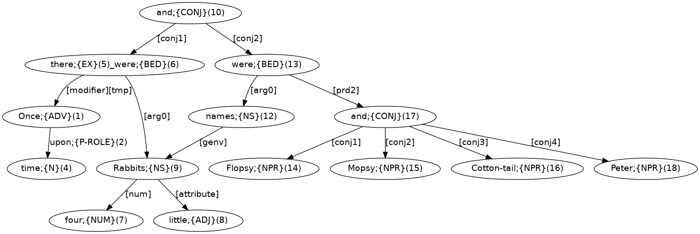This third puzzle graph brings together content from the two previous puzzle graphs with connections of material at two different graph nodes. First, there is connection from the very top node of the graph with the word and(10). Nodes corresponding to the main verb nodes of the two earlier graphs form the dependent nodes of arrows labelled [conjN], much as we saw with the connections that led to Flopsy, Mopsy, Cotton-tail, and Peter. We can therefore expect to reach a solution sentence that is essentially the content of (3) connected by and to the content of (6).
But there is one further point of connection that we also need to make sense of: The arrow [genv] of figure 3 does not have a node with content their as its dependent like in figure 2, but rather takes as its dependent Rabbits(9), which corresponds to the Rabbits(9) of figure 1. We can interpret this [genv] arrow connection as having a ‘special’ instance of their as the arrow's dependent. That is, the word their is absent from the puzzle graph because it's presence is captured as a direct arrow connection (referential link) to Rabbits(9), which occurs in the puzzle graph for independent reasons. We are therefore justified to take ‘(3) and (6)’ — namely (7) — to be the overall solution sentence for the puzzle graph of figure 3.
Figure 4 has a similar structure to figure 3, in the sense that there are two verbs connected by [conj1] and [conj2] arrows from and(11) occuring topmost in the graph. However, while the verb of the first conjunct is overtly realised with lost(2), the content for the verb of the second conjunct is shown as #(12) to indicate the licensed absence of a verb (a lost lost!) from the solution sentence. One further instance of ‘#’ occurs in the graph (namely, #(4)) to indicate a nominal head absence that has [num] (numeral modifier) and ‘of’ (role preposition) links.
Figure 4: Puzzle graph with ‘#’
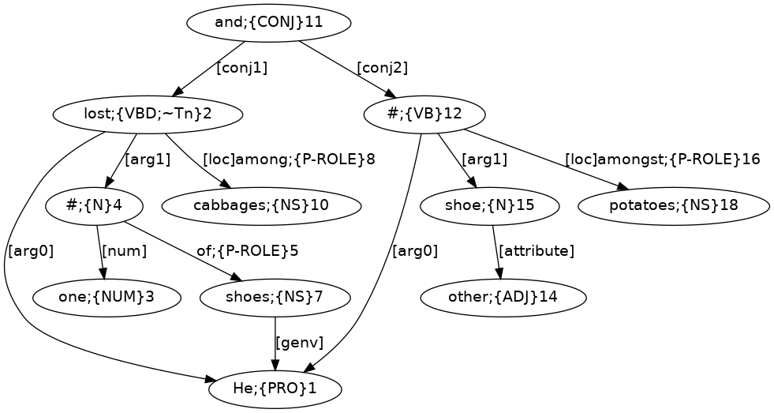Following all the links of figure 4 and including the ‘#’ instances, we can arrive at solution sentence (8).
This section demonstrates how to approach a complex puzzle. We will break this into stages, first building content for simpler graphs, which then combine to give larger graphs, and so ultimately lead to the final graph for reaching the overall solution sentence.
To start, consider figure 5.
Figure 5: Puzzle graph for a single clause
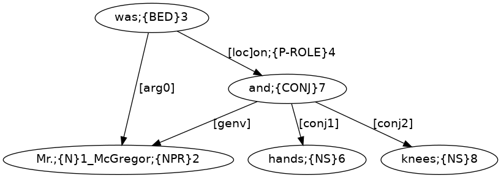By finding [arg0], we can identify was(3) as the main verb, and Mr.(1)_McGregor(2) as the ‘be-er’ (subject). One other arrow extends from was(3) to and(7) and this is labelled with the preposition word on(4) and functional information [loc] (location). In turn, and(7) takes us to two conjuncts via the labelled connections [conj1] leading to hands(6) and [conj2] leading to knees(8). One more connection, labelled [genv] (genitive/possessive), originates from and(7) and leads to Mr.(1)_McGregor(2) to capture the information that hands(6) and knees(8) are those of Mr. McGregor. By following these connections and including his to capture the genitive/possessive connection, we can reach (9) as the solution sentence.
Now consider figure 6.
Figure 6: Puzzle content for a clause with a participle
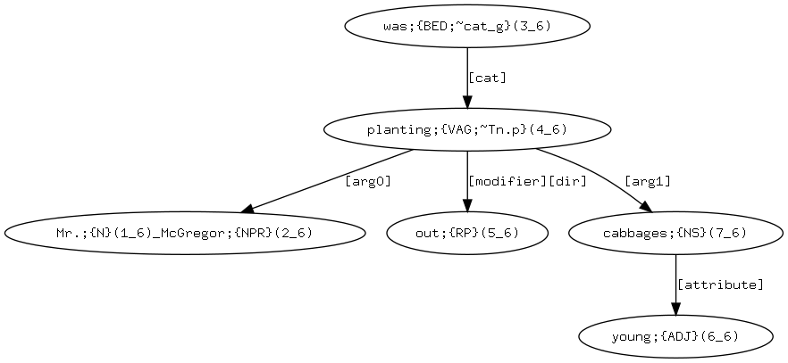By finding [arg0], we can identify the phrasal verb planting(4)_out(5) as the main verb, and Mr.(1)_McGregor(2) as the ‘do-er’ (subject). The [seq] (verb sequence) labelled arrow connecting was(3) to planting(4)_out(5) gives the verb sequence was planting out. A further arrow labelled [arg1] (object) extends from planting(4)_out(5) to cabbages(7) as the content of ‘what Mr. McGregor was planting out’. In turn, cabbages(7) leads via an [attribute] labelled arrow to young(6). By following all these connections of words from the graph, we reach the solution sentence (10).
Now consider figure 7.
Figure 7: Puzzle graph combining figures 5 and 6
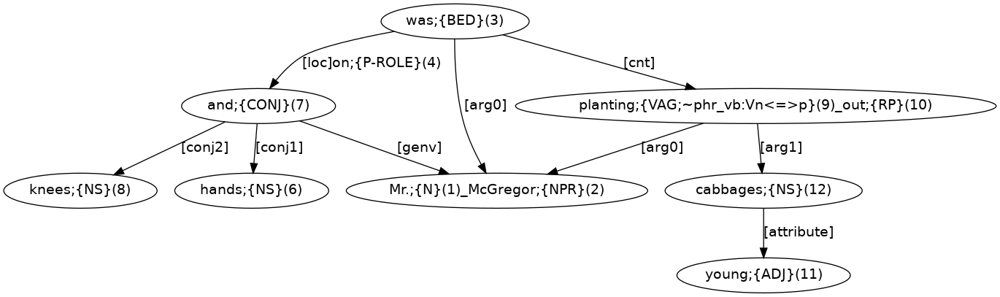Figure 7 results from combining figures 5 and 6, with the exception that the [seq] (sequence verb) labelled connection of figure 6 is replaced by a [cnt] (continuative) labelled connection. As a consequence of this change, planting out can no longer be the main verb of the main clause of a solution sentence, but instead will need to form the main verb of a subordinate participle clause that adds to the information about the ‘be-er’ (subject) of the main clause. A solution sentence that meets this criteria is (11).
Now consider figure 8.
Figure 8: Puzzle graph for a single clause
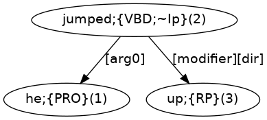Looking at jumped(2), this is linked to he(1) with an [arg0] arrow, and to up(3) with a [modifier][dir] (directional modifier) arrow. Therefore, we can identify jumped as the main verb, he as the ‘do-er’ (subject), and up as an adverbial modifier, to derive the simple sentence of (12).
Now consider figure 9.
Figure 9: Puzzle graph for another single clause
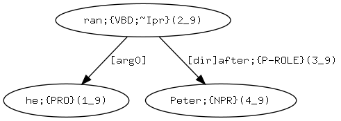Looking at ran(2), this is linked to he(1) with an [arg0] arrow. Also, ran(2) is linked to Peter(4) with an arrow that contains the preposition word after(3) and the function information [dir] (direction). With these words and connections, we can derive the solution sentence (13).
Now consider figure 10.
Figure 10: Puzzle graph combining figures 8 and 9
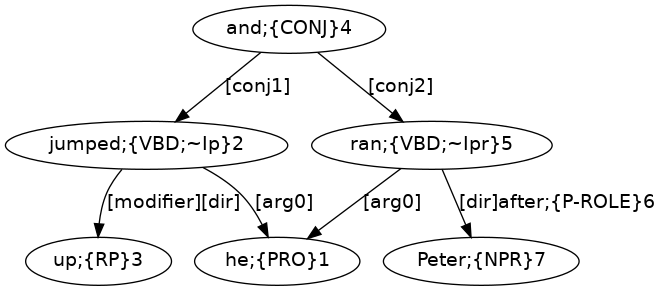This combines figures 8 and 9, with and(4) to connect jumped(2) and ran(5). Note how the single he(1) connects as the ‘do-er’ (subject) to both verbs. A solution sentence is (14).
Now consider figure 11.
Figure 11: Puzzle graph for a clause with a participle
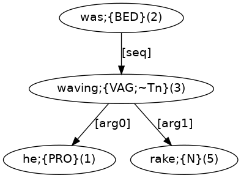We can see waving(3) is connected to he(1) by an [arg0] ‘do-er’ (subject) arrow, and to rake(5) with an [arg1] ‘done to’ (object) arrow. Also an arrow labelled [seq] (verb sequence; also seen above with figure 6) connects was(2) to waving(3). A solution sentence is (15).
Now consider figure 12.
Figure 12: Puzzle graph for an imperative clause
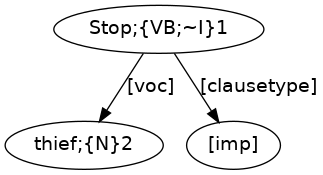The [clausetype] arrow that extends from Stop(1) tells us that Stop is the verb of the clause. This connects to [imp] to tell us that the clause is an imperative. Typically, an imperative is an order or instruction for an unmentioned ‘do-er’ to do something, but also the ‘do-er’ can be addressed with a [voc] (vocative) connection. A vocative — figure 12 has thief(2) — can occur either at the front or end of an imperative, making (16) a possible solution sentence.
Now consider figure 13.
Figure 13: Puzzle graph for a clause with an embedding with the content of figure 12
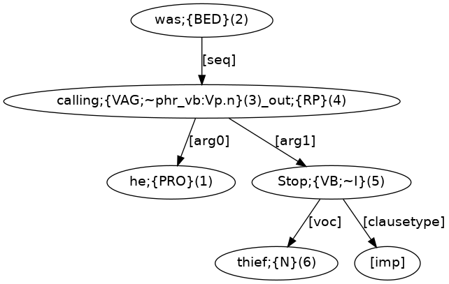This is the puzzle graph for a clause with an embedding with the content of figure 12. This embedding is connected by an [arg1] (object) arrow to the phrasal verb calling(3)_out(4), and so provides the content of ‘what was called out’. Also, calling(3)_out(4) links to he(1) with an [arg0] ‘do-er’ (subject) arrow, so this will need to be the main verb of the overall sentence. Also an arrow labelled [seq] connects was(2) to calling(3)_out(4). A solution sentence is (17).
Now consider figure 14.
Figure 14: Puzzle graph combining figures 11 and 13
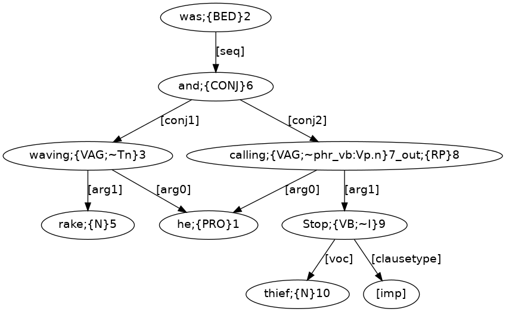Figure 14 results from combining figure 11 and 13. Here, and(6) has conjuncts waving(3) and calling(7) out(8), both of which are participle verbs. In turn, an arrow labelled [seq] connects was(2) to and(6) and it is this connection that creates the verb sequencing that supports the participle forms of the two conjoined verbs. A solution sentence is (18).
Now consider figure 15.
Figure 15: Puzzle graph combining figures 10 and 14
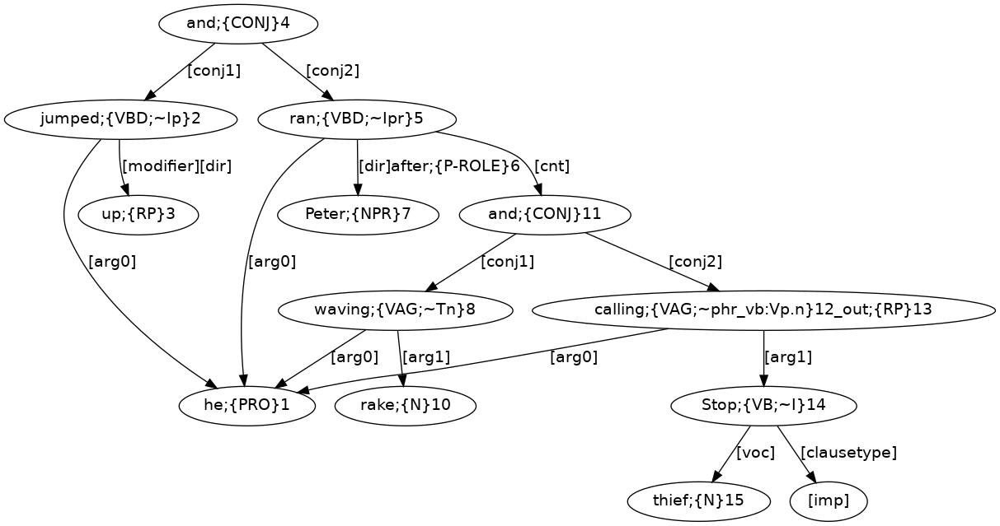Figure 15 results from combining figures 10 and 14, with the exception that the [seq] (sequence verb) labelled connection of figure 14 is replaced by a [cnt] (continuative) labelled connection, much like we saw happen with figure 7. As a consequence of this change, waving and calling out can no longer be the conjoined main verbs of the main clause of a solution sentence, but instead will need to form the conjoined main verbs of a subordinate participle clause that adds to the information about the ‘do-er’ (subject) of the main clause. Note how the verbs jumped(2), ran(5), waving(8), and calling(12)_out(13) all have [arg0] ‘do-er’ (subject) arrows that connect to the same he(1). A solution sentence is (19).
We are finally in a position to consider the overall puzzle graph of figure 16.
Figure 16: Puzzle graph combining figures 7 and 15
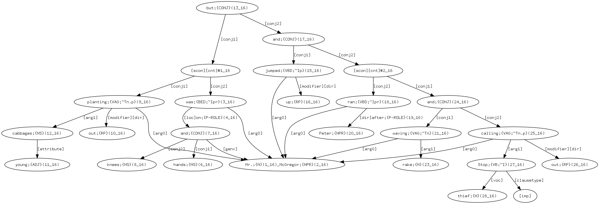This combines figures 7 and 15, with but(13) connecting to was(3) (corresponding to was(3) of figure 7) and and(17) (corresponding to and(4) of figure 15). Note how the verbs was(3), planting(9)_out(10), jumped(15), ran(18), waving(21), and calling(25)_out(26) all have [arg0] ‘be-er/do-er’ (subject) arrows that connect to the same instance of Mr.(1)_McGregor(2). An overall solution sentence for figure 16 is (20).